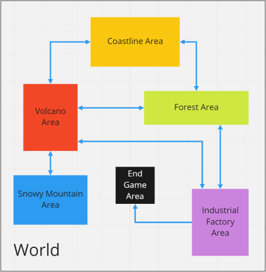
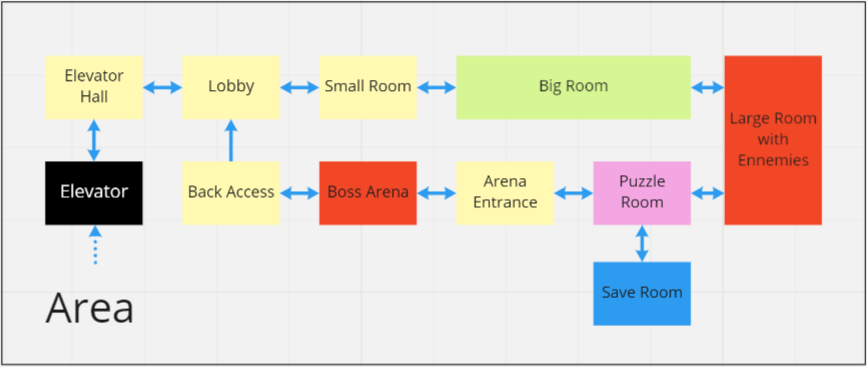
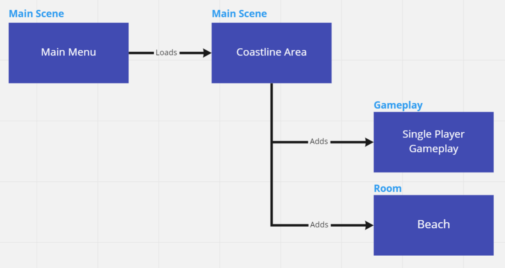

Concepts
The following concepts are inspired from how a classic Metroidvania game is usually broken down.
World
The World of the game will be defined as the universe the game takes place in. It encompasses all locations, and can be thought of as the whole main game itself.
Area
The world is usually split into interconnected Areas defining the general structure and pacing of the game. An Area can be thought of as a big sequence, as going through an Area usually takes at least one full play session. As the player progresses through the game, new Areas become available to her and more connections between previous Areas open up to allow some form of fast-travel or easier back-tracking. Note that travelling between Areas often causes an acceptable downtine in gameplay (usually in the form of a loading screen) due to the underlying loading happening in the background.
Example of Areas:

Room
A given area is then divided into Rooms that the player can explore. A Room is a small, contained, physical location where one or more gameplay elements may happen, like an enemy to fight or a puzzle to solve.
Example of Rooms:

Scenes
From these concepts, Unity Scenes can be divided into at least three different types:
Main Scene
A Main Scene is an entry point of the game, and may correspond to an area.
The key idea is that a Main scene does not actually contain any geometry, mesh or any other physical objects, but is instead responsible for additively loading the player and loading the first few rooms of the current area.
GameObjects managing the game as a whole are supposed to be found in a Main Scene.
Gameplay
A Gameplay scene contains everything related to the player.
GameObjects related to controls, player camera and UI are expected to be found in a Gameplay scene. No physical object bound to a specific location should be present in such a scene.
Room
As the name implies, a Room corresponds to a room, and is a physical location (or level) the player can explore and interact with.
Most of the familiar GameObjects like ground, walls, props, interactive items and entities such as enemies or bosses are expected to be found here.
Relations between Scene types:
